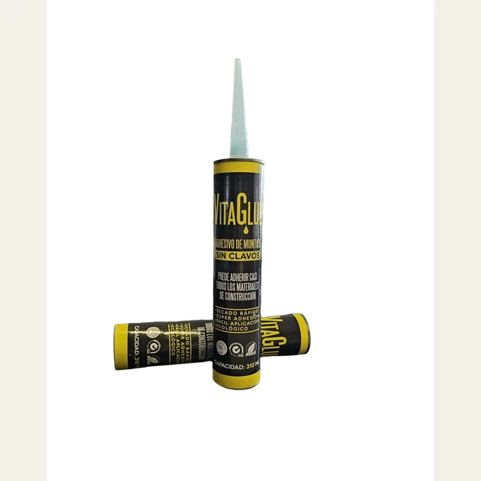
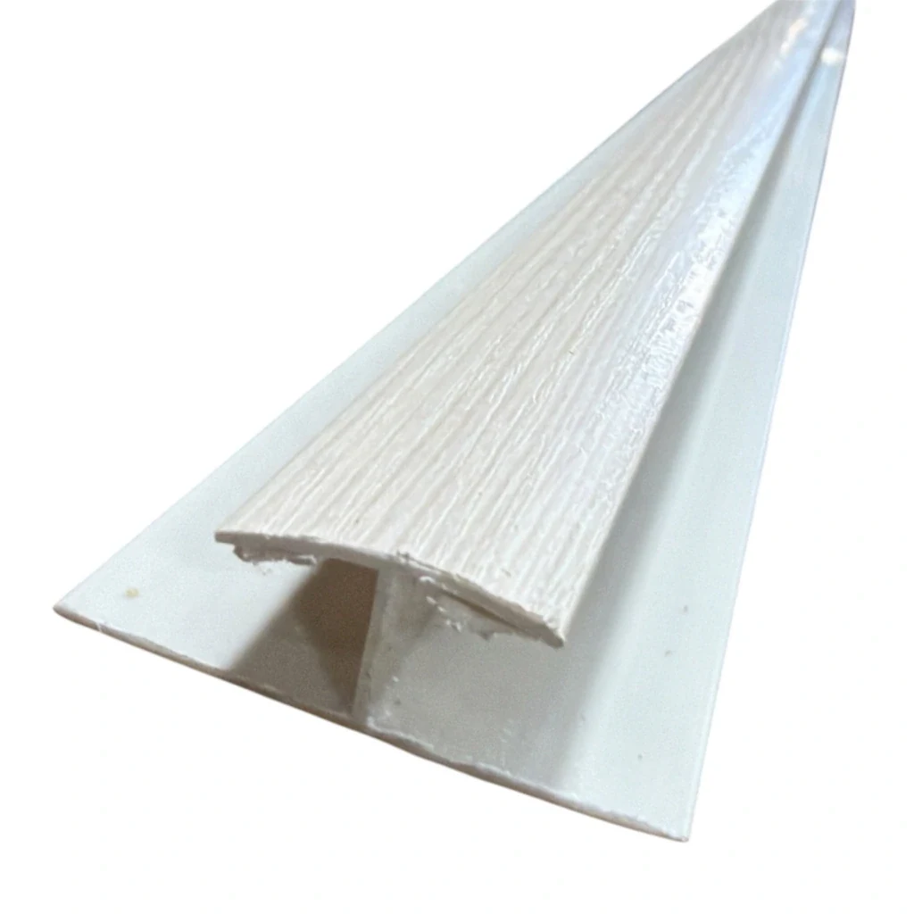
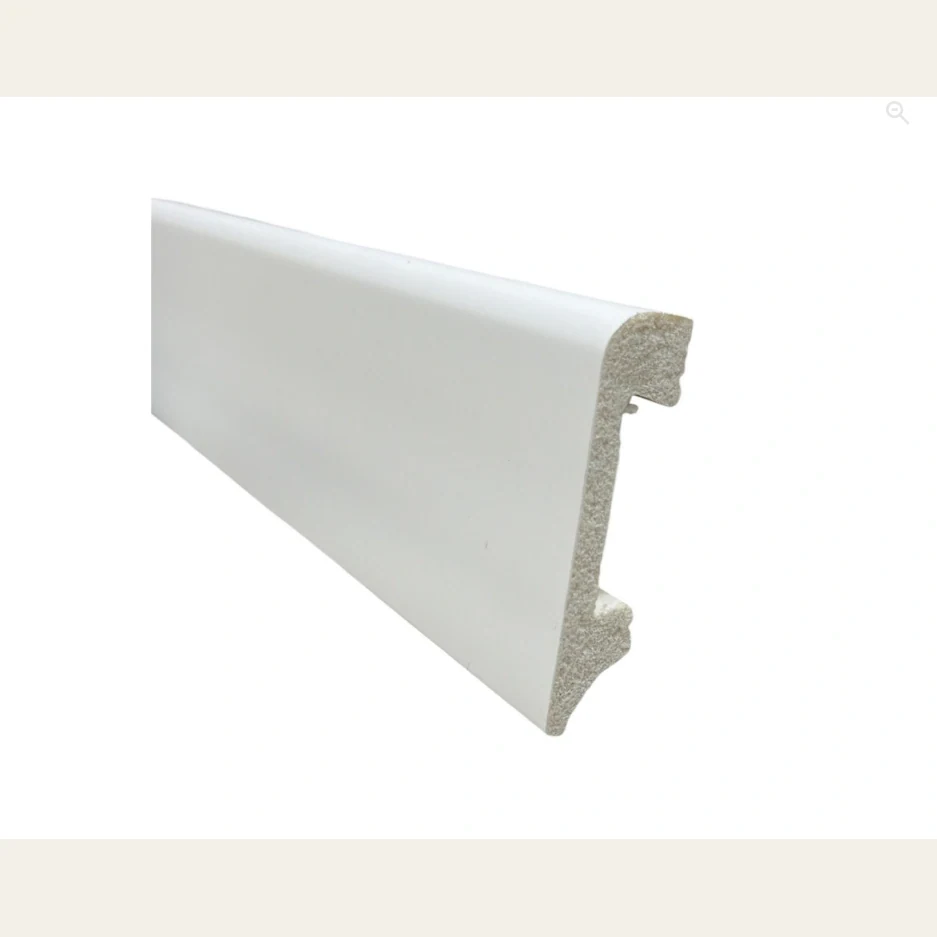
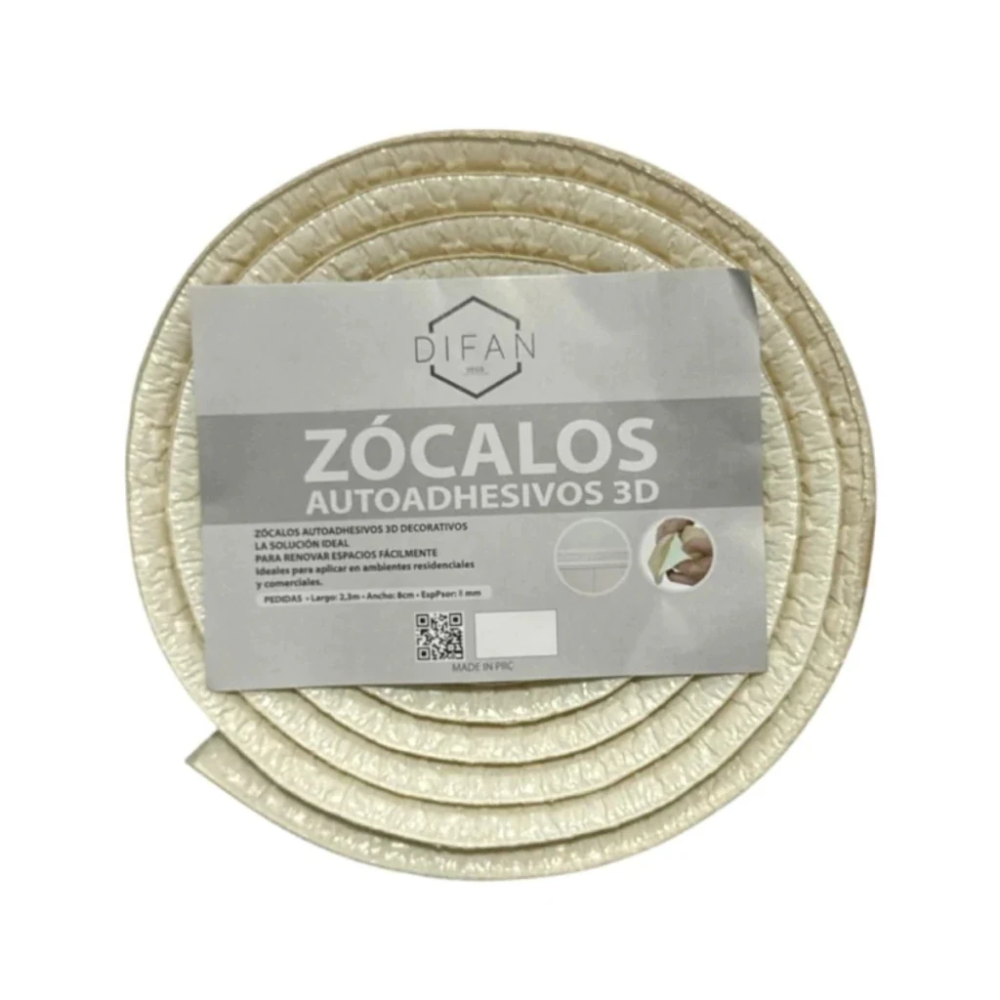

DÓNDE APLICARLO
Terminaciones y accesorios
Ver y filtrar productos →
Adhesivo
Cartucho de 310 ml · adhesivo de montaje

Perfil H · 2,90 m
2,90 m · Unión de machimbre PVC

Perfil TOP perimetral · 2,90 m
2,90 m · Terminación perimetral de machimbre PVC

Perfil U · 2,90 m
2,90 m · Terminación de machimbre PVC

Zócalo PS · 7,6 cm × 1,6 cm × 2,90 m
7,6 cm × 1,6 cm × 2,90 m · Terminación de piso y pared

Zócalo autoadhesivo · 8 cm × 2,30 m
8 cm × 2,30 m · espesor 4 mm